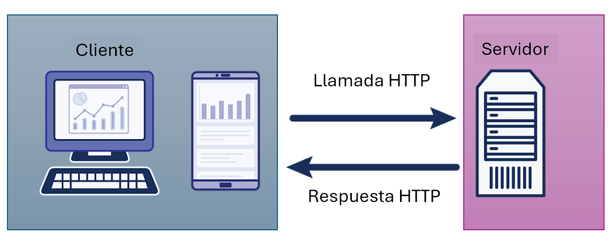

Aplicaciones Web
Python
Conoce a Víctor Vázquez

Desarrollador en Microsoft (azd)
Redes sociales:
| @vhvb1989 | |
| GitHub | /vhvb1989 |
| in/vhvb1989 |
Agenda

- Cómo funciona la web
- Web framework: Flask
- 👩🏾💻 Ejercicio #1: Aplicación Flask
- 👩🏼💻 Ejercicio #2: Herencia en plantillas
- Web framework: Quart
- Alojamiento de aplicaciones web
- 👩🏻💻 Ejercicio #3: Desplegar una aplicación
Cómo funciona la web

Cliente y Servidor
¿Qué es una petición?
Clientes envían peticiones a una ruta en el servidor...GET:
- HTML, CSS, and JavaScript para el sitio Web
- Archivos para descargar
- Texto
POST:
- Formularios
- Archivos para subir
petición HTTP
Ejemplo de petición HTTP:
GET /index.html HTTP/1.1
Host: www.example.com
Ejemplo de respuesta HTTP:
HTTP/1.1 200 OK
Content-Type: text/html; charset=UTF-8
Content-Length: 208
<!DOCTYPE html>
<html>
<head>
<title>Ejemplo</title>
</head>
<body>
<h1>Hola Mundo</h1>
<p>Ejemplo de una respuesta de tipo text/html</p>
</body>
</html>
Respuestas - Código de estado HTTP
Códigos populares:
| Código | Significado | Segmento |
|---|---|---|
| 100 | Continuar | Informativos |
| 200 | OK | Exitosos |
| 301 | Migrado a otro sitio | Exitosos |
| 404 | No encontrado | Errores de cliente |
| 500 | Error en el servidor | Errores del servidor |
Ver todos los códigos.
Que hay en una página Web?
Tres tipos de archivos y/o lenguajes:
- HTML: Contenido y estructura de la página
- CSS: Estilos y diseño
- JavaScript: Código
Ejemplos HTML
HTML contiene el contenido y la estructura de una página web utilizando etiquetas como estas:
Encabezados
<h1>Desarrollo Web - Capítulo 1</h1>
<p>Hoy estoy aprendiendo sobre desarrollo web.</p>
<ul>
<li>Tema 1 - ¿Qué es la Web?</li>
<li>Tema 2 - Frameworks de Desarrollo Web</li>
<li>Tema 3 - Implementación en Azure</li>
</ul>
Ejemplo CSS
CSS utiliza reglas para aplicar formas y diseño a los elementos de la página
Las reglas se pueden aplicar de varias maneras:- Por tipo de elemento. ejem. Todos los elementos H2
- Según la estructura. ejem. Vínculos dentro de un encabezado
- Por reglas especificas mediante clases e identificadores
Ejemplo de reglas para encabezados y párrafos de la página:
h1 {
font-family: "Roboto", sans-serif;
color: rgb(240, 50, 132);
}
p {
background-color: yellow;
}
JavaScript

JavaScript es código que puede ejecutar un navegador Web para aplicar cambios en la página localmente.
Ejemplos:
- Ejecutar scripts al hacer clic en botones o al escribir
- Hacer peticiones y procesar respuestas
- Administrar cookies
Tecnologías para la Web
En el cliente (frontend):
- HTML, CSS
- JavaScript or TypeScript
- Frameworks: React, Vue, Svelte, Lit, Web Components, etc
En el servidor (backend):
- Python
- Node.js
- Java
- C#
- Go
- PHP
- etc
Python en el servidor

¿Qué es un framework web?
¡No reinventes la rueda!
Las personas hacen sitios web todo el tiempo, por lo que tenemos herramientas que lo hacen más simple.
Los frameworks web tienen características como:- Administrar las rutas URL hacia funciones
- Permitirte ejecutar un servidor
- Plantillas para tus páginas web
Diferentes frameworks ofrecen diferentes características y niveles de complejidad.
Python web frameworks
Python tiene algunos frameworks web modernos que son populares:
Flask framework
Flask, un paquete externo, es una librería ligera para peticiones y respuestas del servidor.
Aplicaciones escritas en Flask:
- Netflix
Ejemplo: Flask website simple
👩🏼💻 Repo: github.com/Azure-Samples/simple-flask-server-appservice
El código del servidor está en: app.py. Utiliza Flask para generar respuestas para cada ruta.
Ejecutar el servidor:
python3 -m flask run --port 50505 --debug
Rutas
Petición GET en la ruta "/about":
@app.get("/about")
def index():
return 'About Us'
Parámetros de URL:
@app.get("/search?query=Hola")
def hello():
query = request.args.get("query")
return f"Searching for: {query}!"
Variables de URL:
@app.get("/book/<id>")
def hello(name):
return f"Valor de ID en la ruta: {id}!"
Rutas
Petición POST:
@app.post("/submit")
def submit():
return "¡Gracias!"
Recibir formulario:
@app.post("/submit")
def submit():
name = request.form.get("name")
return f"Gracias, {name}!"
Recibir JSON:
@app.post("/submit")
def submit():
data = request.get_json()
name = data.get("name")
return f"Gracias, {name}!"
Plantillas
Flask utiliza plantillas Jinja2.
Variables:
<h1>{{ title }}</h1>
Condiciones:
{% if user %}
<p>{{ user.name }}</p>
{% else %}
<p>Session no iniciada</p>
{% endif %}
Ciclos:
<ul>
{% for item in items %}
<li>{{ item }}</li>
{% endfor %}
</ul>
Pre-requisitos para Ejercicio
Ejercicio: Aplicación Flask
Repositorio:
Azure-Samples/simple-flask-server-appservice
- Ejecuta la aplicación.
- Agrega una nueva ruta para "/about" que utilice una nueva plantilla "about.html".
- Verifica que la nueva ruta funcione correctamente.
- Agrega un parámetro "location" para la nueva ruta y muestra el valor en la página.
🙋🏼♀️🙋🏾♀️🙋🏽♀️ Preguntas? 🙋🏻♀️🙋🏽♂️🙋🏿♀️
Herencia en plantillas
Jinja2 ofrece herencia en plantillas.
Plantilla base:
<html>
<head>
<title>{{ title }}</title>
</head>
<body>
{% block content %}{% endblock %}
</body>
</html>
Plantilla hija:
{% extends "base.html" %}
{% block content %}
<h1>About Us</h1>
{% endblock %}
Ejercicio: Herencia en plantillas
- Crea una plantilla base basada en lo que es común en las otras páginas.
- Actualiza las otras plantillas para que extiendan la plantilla base.
- Cambia el error 404 para que use una plantilla que extienda la plantilla base.
🙋🏼♀️🙋🏾♀️🙋🏽♀️ Preguntas? 🙋🏻♀️🙋🏽♂️🙋🏿♀️
Quart & Async
Quart
Quart es la version asíncrona de Flask.
@app.get("/")
async def index():
return await render_template("index.html")
Quart es útil cuando las aplicaciones tienen llamadas de E/S lentas:
@app.route('/')
async def chat():
return await openai_client.chat.completions.create(
messages=[{"role": "user", "content": "Write a haiku"}]
)
La importancia de async
Necesitamos async para construir aplicaciones web modernas que admitan concurrencia.
Una aplicación web sin async:

Una aplicación web con async puede manejar nuevas solicitudes mientras espera una operación de E/S:

Cualquier aplicación con solicitudes de red lentas, consultas a la base de datos o lecturas de archivos puede beneficiarse.
De Flask a Quart
Instalar Quart:
pip install quart
Actualiza la app :
from quart import Quart
app = Quart(__name__)
Usar rutas async:
@app.route('/')
async def index():
Ejemplos con Quart
| Repositorio | Descripción |
|---|---|
| azure-search-openai-demo | Aplicación de chat con OpenAI / RAG |
| openai-chat-app-quickstart | Chat simple con OpenAI |
| openai-chat-app-entra-auth-local | Chat simple con OpenAI y autenticación con Quart-Session |
Alojamiento de aplicaciones web

Opciones de alojamiento
Cuando tu sitio web está alojado en un servidor, significa que otros usuarios en Internet pueden acceder a él.
Hay muchas opciones de alojamiento:
- Una computadora alquilada en un centro de datos
- Una máquina virtual
- Un PaaS (plataforma como servicio)
Considera:
- ¿Cuánto control deseas tener?
- ¿Disfrutas administrar sistemas?
- ¿Necesitas que pueda escalar?
Opciones de alojamiento en Azure
| Azure Container Apps | Azure Functions | |||
| Azure Kubernetes Service | Container Management | Azure App Service | Serverless | |
| Entorno | Containers | PaaS | ||
| Nube | Azure | |||
Para Flask, App Service es la forma más fácil de comenzar.
Alojamiento de aplicación Flask en Azure

Utilizando Azure Developer CLI:
azd up
Ejercicio: Desplegar aplicación web en Azure
- Obtén una cuenta gratuita de Azure
- Utiliza el Codespaces de los ejercicios anteriores o instala Azure Developer CLI.
- Ejecuta
azd up. Si es la primera vez, tendrás que usarazd auth loginprimero. - Si se despliega correctamente, comparte la URL en el chat!!. Si no, qué error obtienes??. 🪲
- Una vez que hayas verificado que la aplicación funciona, ejecuta
azd downpara remover la aplicación (para no desperdiciar recursos en la nube innecesariamente).
¿Alguna pregunta?